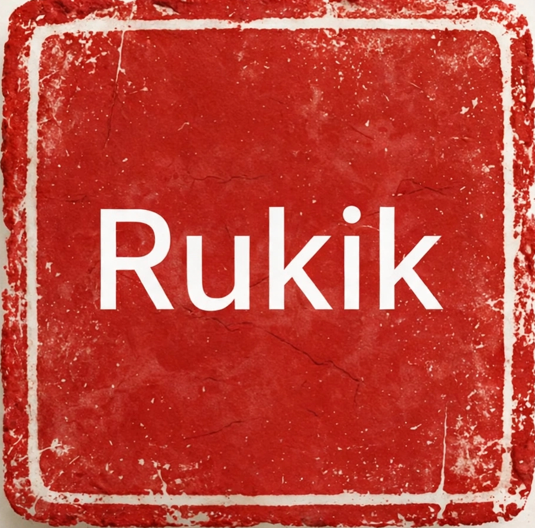

RUKIK AI 会议伴侣统一 UID 登录。会议功能目前仅对内部测试名单开放。
实时转写 · 思维导图 · AI 预见
录音与转写仅保存在你的账号下，默认私有；删除会议后其内容将不可再被检索。发言人分离在后续阶段提供；会议导图与 AI 预见已上线（内部测试）。
暂无预见。会议推进后，AI 会在这里提示风险、冲突与依赖瓶颈，并为关键决策给出情景推演。
结合本场与历史会议提问，由统一智能中枢（问 Rukik）作答，记录按你的账号授权检索。
本场参会人员（来自主题候选，可选；不勾选也能直接开始，录音中可随时增删）
主题人员是长期候选名单，不代表每次都出席；每场会议的实际参会人员在录音时单独确认。从人物记忆选择可直接关联原人物，不重复建档；陌生人也可以先只写姓名。
删除后，该次会议的录音、转写、纪要及关联的会议专属内容将按照数据删除规则处理。其他会议和所属长期主题不受影响。